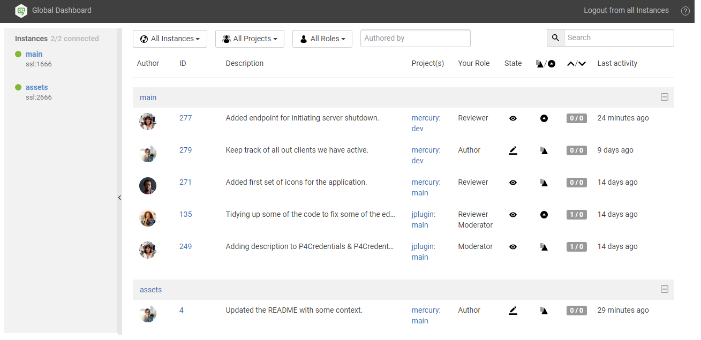
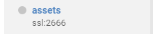
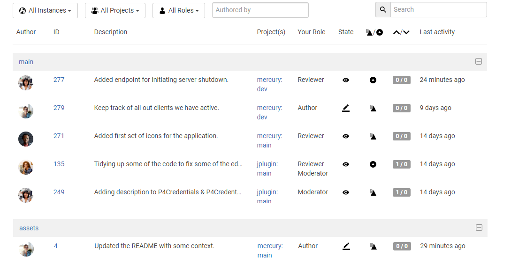
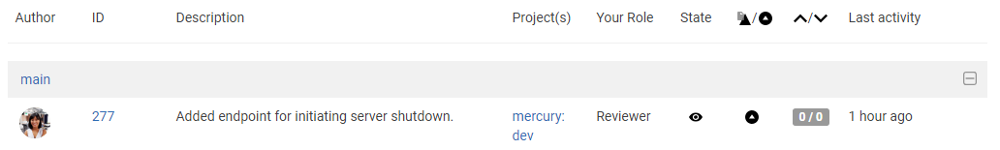

Global dashboard page quick reference
Global dashboard is only available if your Swarm administrator has configured Swarm to connect to more than one Helix Core server instance.
The purpose of the global dashboard is to allow you to focus on reviews that need to be done, so that other users are not blocked. The global dashboard lists reviews by Helix server according to the most recently modified first, and shows your role in the review.
- Enter the basic Swarm URL without a Helix server instance name, for example: https://swarm.company.com
- If the log in dialog is displayed it is the same dialog that is displayed when you click Log In from the banner, log in to the global dashboard.
- Since it is tied to the logged in user, the global dashboard is only populated for the Helix server instances you are logged in to in Swarm.
- If you are already logged in to a Helix server instance in Swarm, the dashboard for that server will be automatically populated when you open or refresh the global dashboard.
For instructions about logging in to the global dashboard, see Log in to one or more Helix server instances.
The global dashboard is displayed:

The global dashboard is made up of three main areas:
- Toolbar: log in to Helix server instances, log out of all Helix server instances, and open the Swarm help from the global dashboard toolbar.
- Sidebar: Log in/logout of individual Helix server instances and view you profile for any instance that you are logged in to.
- Helix server dashboards: view, filter and search the dashboards of the Helix server instances you are logged in to. Jump directly to a Helix server, review, or project by clicking on a link.
Toolbar
- Log In (only displayed in the toolbar if you are not logged in to any Helix server instances): click to log in to one or more Helix server instances, see Log in to one or more Helix server instances.
- Logout from all instances (only displayed in the toolbar if you are logged in to at least one Helix server instance): click to logout from all of the Helix server instances, see Logout of all Helix server instances.
- Help
 : click to view the Swarm help.
: click to view the Swarm help.
Sidebar
- Log in status:
- Not logged in to the Helix server instance:
- Logged in to the Helix server instance:


- Helix server instance actions:
- Log in
 (only available if you are not logged in to the Helix server instance): hover over the instance name and click the Log in button when it is displayed, see Log in to a Helix server instance.
(only available if you are not logged in to the Helix server instance): hover over the instance name and click the Log in button when it is displayed, see Log in to a Helix server instance. - Logout (only available if you are logged in to the Helix server instance): hover over the instance name, click the Gear button
 , and select Logout from the dropdown menu to logout of the instance, see Logout of a single Helix server instance.
, and select Logout from the dropdown menu to logout of the instance, see Logout of a single Helix server instance.
- Log in
Helix server dashboards
The global dashboard lists reviews by Helix server according to the most recently modified first, and shows your role in the review.
Example global dashboard showing a number of Helix server dashboards:

Jump directly to a specific area of the dashboard page using the following links:
Dashboard filters
Used to filter your dashboard reviews, the following filters are available:
- Instances: filter by the Helix server instance, limiting results to All Instances or to an individual instance.
- Projects: filter by the project the review is part of, limiting results to All Projects or to an individual project. The Project filter will only show projects for which there are reviews in your dashboard.
- Roles: filter by your specific role in a review, limiting results to reviews for which you are the author, a reviewer, a required reviewer, or a moderator. The Role filter will only show roles for which there are reviews in your dashboard.
- Authored by: filter the reviews to only those that have been authored by a certain user. Type in this field to get a drop down list of users to filter by.
- Reset (only displayed if one or more filters are set): click the Reset button to reset all dashboard filters back to their defaults.
- Search: filter the reviews by searching the description and review ID.
Dashboard content
The dashboard for each Helix server shows a summary of the information for each review.
- Click on the Helix server name in the header bar to open Swarm for that instance in a new tab.
- Click on the header bar to the right of the Helix server name to collapse the dashboard for that instance. Click again to expand the dashboard for the instance .

- Author avatar: the review author's avatar, hover over the avatar to see the ID and name of the review author. Click on the avatar to go to the profile of the review author, see Viewing another user's profile.
- ID: the unique number used to identify the Swarm review. Click the review ID to display the review, see Review display.
- Description: the review description may be truncated if it is too long, in which case click on the review description to expand it.
- Project(s): lists the project branches this review covers. A review may span multiple branches and projects. Click a branch link to navigate to the project page for that branch.
- Your role: displays your role in the review and is the reason the review is in your dashboard. This can be Author, Reviewer, Required Reviewer, or Moderator.
- State: a review can be in one of the following states:
- Needs review: The review has started and the changes need to be reviewed.
- Needs revision: The changes have been reviewed and the reviewer has indicated that further revisions are required.
- Approved: The review has been approved. The changes may need to be committed.
- Type: displays the type of review, either a pre-commit review or a post-commit review .
- Votes up/down: displays the number of up votes and down votes for the review.
- Last activity: displays the last time that any changes were made to the review, including votes, comments, commits, and file changes.
The Approved state only applies to review authors, it is only shown for a review that has been approved but has not been committed.